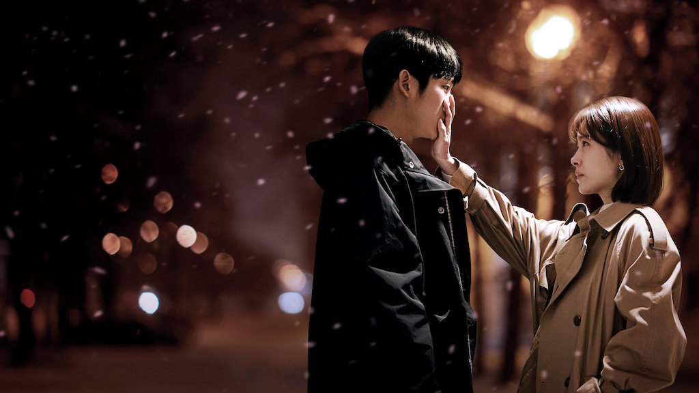

狗狗打字機
狗狗打字機
【Netflix 學院】 春夜 Ep1-2

心得雜記
看這齣戲的時候，比起為兩人之間的love signal感到心動，更多的是害怕，怎麼可以一步步往罪惡的深淵淪陷。我明白愛不由己，愛情的發生我們是無法控制的，但是行為呢？究竟是反抗內心的力量比較痛苦，還視違背道德良知更為可恥呢？靜仁明明知道是不對的，至少在她個人的價值觀上，愛上其他男人是不被容許的，可是她優先縱容自己混亂了，甚至假借朋友之名，連自己最討厭的欺騙、隱瞞也一再採用。
追隨愛的靜仁，究竟是誠實還是虛偽？靜仁知道自己在做什麼嗎？如果是我會敢說出口嗎？
至少就目前為止，紀碩對她很是包容，是愛嗎？他願意給靜仁時間、且在第一時間發現她的異常，也沒有無理取鬧、強迫靜仁，反而顯得靜仁漏洞百出、不可理喻。這樣的女主角也可以存在嗎？現在的我還沒辦法支持。靜仁有愛過紀碩嗎？兩人是如何交往的？我很好奇這點，希望後面的集數中會有解答。
婚姻是什麼？愛又應該如何？我想會是這齣戲很重要的課題。因為將不忠視為首要的錯誤，所以許多人的一生可能都不敢嘗試吧，所謂「出軌」；但嘗試從出軌的戀人中找到愛的意義，也許可以拓寬人們對愛的想像。什麼是對？什麼是錯？我也想試著重新審視自己的內心，如果模糊化道德的界線，我能看到什麼？
下次下雪的時侯，不要在藥局，我們在外頭見吧！